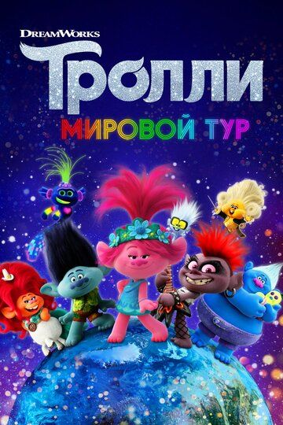

Представляем вашему вниманию подборку семейные мультфильмов.
Топ 10 лучших мультфильмов:

Жанр: мультфильм, мюзикл, фэнтези, комедия, приключения, семейный
Режиссёр: Уолт Дорн, Дэвид П. Смит
Немаловажную роль в жизни троллей из мультфильма "Тролли. Мировой тур" играет музыка. Герои невероятно музыкальны, обладают прекрасным слухом и безупречными голосами. Способны играть на инструментах. Персонажи удивляют разнообразием удивительных причесок. Они очень радостны и позитивны. Злые бергены, страшные существа, представлены в мультике не знающими счастливого существования. При очередном конфликте, главным персонажам удалось лишь чудом остаться в живых. Они находились в ожидании творческого, незабываемого приключения. Они фантазировали, какими окажутся чудеса, о чем никогда не задумывались раньше. Они узнают, что такое концерты под открытым небом и всевозможные баттлы. Однако, коварная королева Рокс не дремлет и строит каверзные планы для того, чтобы насолить героям. Неудержимая героиня попытается растворить их чарующую музыку в тяжелых звуках рока. Друзьям предстоит объединиться, чтобы справиться с нелегкими испытаниями судьбы.
Жанр: мультфильм, фэнтези, мелодрама, комедия, приключения, семейный
Режиссёр: Хон Сон-хо
Мультфильм "Красные туфельки и семь гномов" интересен как маленьким и взрослым. Однажды волшебница разозлилась на юношей и превратила их в непривлекательных персонажей. Она дала шанс исправить ситуацию, наказав, что для снятия заклятия они должны раздобыть яркие туфли. Фея знала о том, что хозяйка красивой обуви не захочет с нею расставаться. Ведь в них красавица выглядит еще чудеснее. Персонажи задумывают украсть необходимую вещь, чтобы стать людьми. Их попытки оказываются напрасными. Ведь внимательная обладательница не спускает с них глаз. У карликов нет возможности к ним приблизиться. Они придумывают способы, заполучить желаемое. Решают дождаться темноты, когда она ляжет спать и снимет башмачки. Сделав так, как было запланировано, герои приготовились ждать. Они были очень удивлены, когда увидели вместо очаровательной девушки, простушку. Примечательно, что пути Белоснежки и заколдованных молодых людей вскоре пересекутся. Тогда они узнают, что такое дружба и настоящие приключения
Жанр: мультфильм, комедия, семейный
Режиссёр:Крис Пирн, Кори Эванс, Роб Лодемайер
В центре сюжета мультфильма "Семья Уиллоуби" оказывается семейство со славным прошлым. Но теперь родители слишком заняты собой, чтобы заботиться о своих детях: старшем сыне Тиме, который пытается уберечь братьев и сестру от неприятностей; средней дочери Джейн, любящей петь; и изобретательных, но тревожных мальчиков-близнецов по имени Барнаби. Однажды дети находят девочку в коробке, оставленную за их воротами, и решают назвать ее Рут. Когда папа и мама выгоняют детей из дома после обнаружения Рут, четверо юных героев оставляют ее на пороге кондитерской фабрики, и ее директор, радостный командир Меланофф, принимает малышку. Стремясь к лучшей жизни, Джейн говорит братьям, что они должны отправить своих предков в "отпуск". Получив туристическую брошюру о вулканах, медведях и других опасностях, родители ведутся на уловку и отправляются на отдых, однако после нескольких дней желанной свободы детишек внезапно посещает няня. Теперь ребятам предстоит придумать, как они могут избавиться и от нее...
Жанр: семейный, мультфильм, комедия
Режиссёр: Аарон Вудли
Обезьяна-тинейджер по имени Спарк живет на планете под название Бана. Но уже на протяжении тринадцати лет властью на планете владеет злобное существо Чжун. Ему удалось разделить королевство на множество частей. Но в его голове зреет куда более коварный план. Он хочет завладеть вообще всей Вселенной. Спарк не может допустить такого. Поэтому он при поддержке своих друзей пытается свергнуть его с престола. Храбрецам придется совершить опасное путешествие по всем уголкам Вселенной, чтобы сохранить мир.
Жанр: мультфильм, комедия, приключения, семейный, музыка
Режиссёр: Эш Браннон
Все ожидают, что молодой тибетский мастиф по кличке Боуди станет следующей сторожевой собакой в гималайской овечьей деревне. Но бунтарь по своей природе, он не хочет идти по стопам своих прадеда, дедушки и отца, которых помнят за то, что они всегда защищали овец от волков. Когда Боуди находит упавшее с неба радио, он слушает шоу, где ведущий берет интервью у Энгуса - легендарного кота рок-музыканта. Пес воодушевляется и решает отправиться в город, чтобы попытать счастья в мире музыки. Однако рок-сцена не встретила его с распростёртыми объятиями, поэтому славу герою придется буквально выгрызать..
Жанр: мультфильм, семейный
Режиссёр:
Лино очень много времени проводит с детьми. Ведь главный герой фильма работает аниматором. Но молодой парень не очень доволен своей жизнью. Лино мечтает о новом роскошном доме, приличной работе и любимой девушке. Он устал от безденежья, поэтому однажды парень решается на кардинальные меры — находит по объявлению мага, который за определенную плату обещает помочь наладить жизнь. Однако, в ходе эксперимента что-то пошло не так и юноша, вместо того чтобы стать очаровательным миллионером превращается в огромного плющевого кота.
Жанр: мультфильм, фэнтези, комедия, приключения, семейный
Режиссёр: Тоби Генкель, Реза Мемари
Главным героем фильма является маленький и очаровательный воробышек по имени Ричард. Так случилось, что его приемными родителями стали аисты. Поэтому он с самого рождения считает себя одним из них. Но когда приходит время улетать в теплые края, приемные родители очень расстроены, что Ричард не сможет полететь с ними, а останется дома. Но подросший воробей решает доказать всем, что у него хватит сил на столь длительный перелет. И вот главный герой уже держит путь в теплую Африку. Но это оказалось не так просто, как казалось на первый взгляд. В дороге он встретит много новых друзей с которыми ему придется пережить массу приключений.
Жанр: мультфильм, фэнтези, мелодрама, комедия, детектив, приключения, семейный
Режиссёр: Джон Стивенсон
Гномео и Джульетта наладили отношения между красными и синими гномами, а затем переехали в новый дом, где начали строить свою любовь. Теперь из их сада открывается замечательный вид на Лондон, жизнь просто прекрасна, но как говорится, до поры, до времени. На районе начали происходить похищения садовых фигурок, за дело берется сыщик Шерлок Гномс, он уверен, что в этом деле замешан его злейший враг Мориарти. Вместе со своим верным напарником он решает помочь нашим героям вернуть друзей домой, а заодно навсегда разобраться со злодеем, чтобы он уже никогда не вернулся.
Жанр: мультфильм
Режиссёр: Лизе И. Осволл
Главная героиня этого яркого мультфильма, корова Клара, мечтает стать звездой эстрады. Но очередное прослушивание заканчивается неудачей, и она решает отправиться в деревню к родителям, чтобы отдохнуть и набраться сил. Но долго сидеть без дела, не в её стиле. Она решает открыть свою пекарню, чтобы радовать всю округу вкуснейшей выпечкой. У этого начинания сразу нашлись как поклонники, так и враги. Получив поддержку от друзей Клара с энтузиазмом берется за дело. Удастся ли врагам этой затеи помешать затейливой коровке, осуществить свою новую мечту и стать знаменитым кондитером?
Жанр: мультфильм
Режиссёр: Ник Парк
Много миллионов лет назад, когда земля была еще молодая, на нее с неба упал метеорит где то в район Манчестера, к поселению древних людей. Они, как это и присуще дикарям начали пинать этот кусок ногами. Так и зародился на нашей планете футбол. Об этом наша цивилизация узнает потом из наскальных рисунков. Но пока дикарям придется отвоевать свое существование с более прогрессивным обществом. Уникальность мультфильма в том, что герои не рисованные, не кукольные, а пластилиновые. Нелогичные, невероятно смешные!